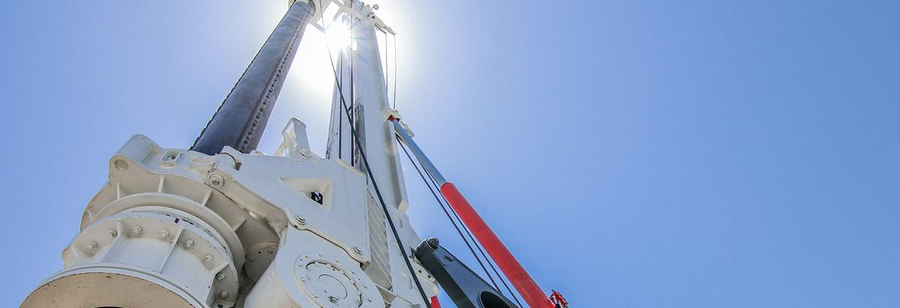
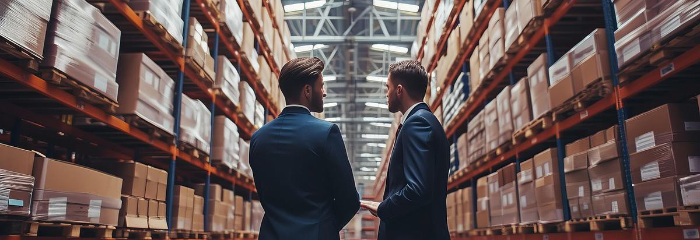
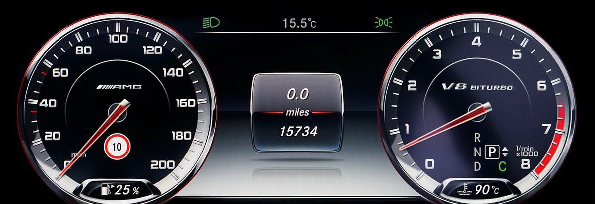

01
Macarale & Ridicare
Macarale mobile, macarale pe șenile, macarale turn și echipamente de ridicare — selectate după capacitate, rază și condițiile de șantier.
Soluția 01
Macarale și echipamente de ridicare, mașini de terasament, echipamente de compactare și mașini de construcții specializate. Un singur interlocutor între producătorii globali și cererea regională de infrastructură.

01
Macarale mobile, macarale pe șenile, macarale turn și echipamente de ridicare — selectate după capacitate, rază și condițiile de șantier.
02
Excavatoare, încărcătoare, buldozere, autogredere și buldoexcavatoare pentru lucrări de pământ și săpături de infrastructură.
03
Cilindri compactori și echipamente de compactare pentru îmbrăcăminți rutiere, umpluturi și îmbunătățirea terenului.
04
Mașini și echipamente auxiliare specifice proiectului, inclusiv echipamente clasa CAT.
Sector, locație, grafic și condiții de șantier. Pornim de la proiect, nu de la catalog.
Echipament și configurație selectate în raport cu cerințele de capacitate, acces și disponibilitate.
Relația cu producătorul, transportul și logistica de proiect, gestionate dintr-un singur loc.
Ca companie de active industriale, relația nu se încheie la livrare — continuă pe toată durata de exploatare.
Pentru cine
Soluția 02
Condiții flexibile pentru nevoi bazate pe proiect. Capacitate fără angajament de capital și un parc de echipamente care se adaptează programului de șantier.

Flexibilitate
Ferestre scurte de intensitate sau acoperire pe termen lung, pe durata proiectului. Durata urmează programul.
Capacitate
Capacitate suplimentară la vârfurile graficului; niciun cost fix purtat în perioadele mai lente.
Risc
Mașina potrivită, fără a-ți asuma amortizarea, planificarea mentenanței sau riscul de valorificare.
Închirierea nu este un serviciu de rang inferior. Este o decizie despre unde își imobilizează un proiect capitalul.Stratul de Capabilități BRAMS
Soluția 03
Mobilitate & Flotă nu este, în mod deliberat, un „sector”. Este o capabilitate care traversează toate sectoarele de mai sus — și exact de aceea poate absorbi linii noi de activitate fără a impune un pilon nou sau o reproiectare a navigației.

Active
Programe pentru nevoile de flotă de vehicule și echipamente ale platformelor industriale și ale proiectelor: componența flotei, planificarea disponibilității și continuitatea operațională.
În Pregătire
Leasingul de flote și finanțarea echipamentelor sunt extensia naturală a definiției categoriei: o companie de active industriale nu doar furnizează activul, ci structurează și modul în care este finanțat.
În Pregătire
Aducerea în regiune a vehiculelor produse în America de Nord. Este prima aplicare a identității noastre geografice — conectarea producției nord-americane la cererea regională — în afara echipamentelor.
În Foaia de Parcurs
Echipamente autonome de construcții, echipamente grele pe hidrogen și electrice și telematică inteligentă de flotă. Nu sunt surprize — sunt direcții pe care categoria le conținea de la început.
Notă: elementele marcate „Urmează” și „Orizont” sunt în pregătire sau în foaia de parcurs. Pentru a confirma stadiul actual într-o discuție, vă rugăm să contactați echipa noastră.
Parteneriate cu Producători
Pentru un producător de echipamente sau vehicule care intră în regiune, BRAMS oferă altceva decât un dealer care preia comenzi: o platformă de distribuție susținută de un grup care a fost clientul și care operează el însuși proiecte de infrastructură.
Aceeași structură este cea care construiește argumentul pentru bănci și agenții de credit la export: o activitate care poate fi evaluată, care este durabilă și a cărei creștere este consecventă cu definiția categoriei.
Interlocutori
Vânzare, închiriere, un program de flotă sau distribuție — alegeți subiectul în formular și vă direcționăm către echipa potrivită.